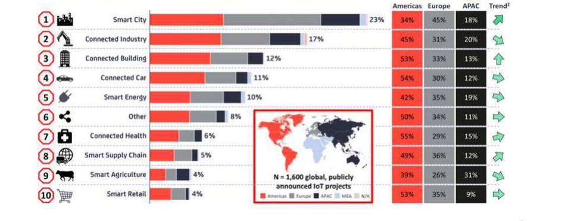

IoT
Qu'est ce que c'est ?
L’Internet of Things (IoT) décrit le réseau d’appareils physiques, les « objets », qui intègrent des capteurs, des logiciels et d’autres technologies en vue de se connecter à d’autres terminaux et systèmes sur Internet et d’échanger des données avec eux.
Pourquoi l’Internet des Objets est-il si important ?
- L’automatisation de tâches simples
- Evaluation exacte d’un environnement et au déclenchement d’une action.
- L’IoT permet aux machines de supprimer une partie de l’effort manuel en exécutant les tâches à un temps donné ou selon une condition précise.
- Cela réduit les coûts et rend la vie plus confortable.

Quelles sont les technologies qui ont rendu l’IoT possible ?
- Accès à une technologie de capteurs à coût réduit et faible consommation.
- Connectivité.
- Plates-formes de Cloud computing.
- Machine learning et analyses.
- Intelligence artificielle (IA) conversationnelle
En quoi consistent les applications IoT ?
- Les applications intelligentes IoT sont des applications logicielles sous forme de service (SaaS) préconçues qui peuvent analyser et présenter les données extraites par les capteurs IoT aux utilisateurs d’entreprise par l’intermédiaire de tableaux de bord
- applications IoT utilisent des algorithmes de machine learning pour analyser la quantité massive de données générées par des capteurs connectés dans le Cloud.
De quelles manières les applications IoT sont-elles déployées ?
La capacité de l’IoT à fournir des informations issues de capteurs, ainsi qu’à permettre aux appareils de communiquer entre eux, rend possible une vaste palette d’applications.

Quels sont les secteurs d’activité qui peuvent bénéficier de l’IoT ?
- Production
- Transport et logistique
- Retail
- Secteur public
- Santé
- Sécurité générale à l’échelle de tous les secteurs d’activité
Quels sont les risques liés à IoT
- Chaque objet connecté a un potentiel exploitable caché
- Ne sous estimez pas l’importance d’une protection sécurisée même sur les objets qui n’ont à priori aucun avantage à être piraté
- Les fabricants ne se sentent pas tous concernés par la sécurisation de leurs appareils